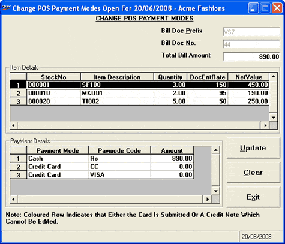
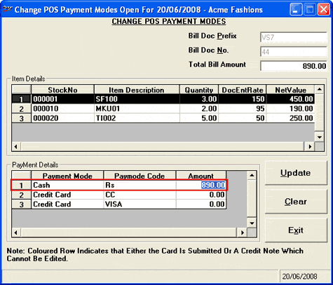
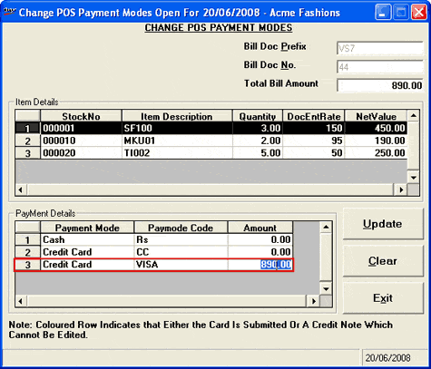

This option addresses the flexibility of changing the payment details (mode of payment) once the bill is settled. This option is available only in the Retail flavour of Shoper POS and the menu option is restricted to Super users only.
Suppose a POS Super user settles a bill using F7 option during billing by Cash mode as per the customer's choice. Later, the customer realises that enough cash is not available to settle the bill and offers credit card for settling the bill. In such a case, the Super user can change the payment mode from Cash to Credit Card.
Change Payment Mode is not permitted if:
Tally Interface is executed for a given transaction
Online polling is executed for a given transaction
Day End process is executed
Payment is made through credit note
Credit card transaction is submitted for realisation
Online authorisation for credit card is ON
The bill is generated using older version of Shoper and migrated to Shoper 9
The options Submission and Realisation are also applicable for Gift Voucher transactions.
How to reach: Sales > Change Payment Mode
The Change POS Payment Modes window is displayed.

Bill Doc Prefix: Enter the Document Prefix of the bill.
Bill Doc No.: Enter the Document Number of the bill.
Total Bill Amount: The total bill amount is displayed in this field.
Item Details: The item details in the specified bill are displayed in this grid.
Payment Details: The payment details like Payment Mode, Paymode Code and Amount are displayed in this grid. Here, you can make changes to the mode of payment and the amount.

By default, Cash and Credit Card options are available to change the mode of payment. Any other mode of payment captured in billing can be changed to cash or credit card. If there are any payment modes, which cannot be changed are displayed in different colour.
The validations are carried out to make sure that the sum total of all the payment modes exactly matches the original bill amount displayed.
